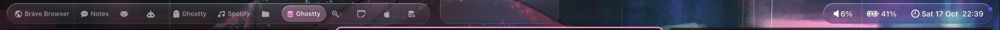
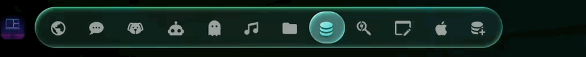
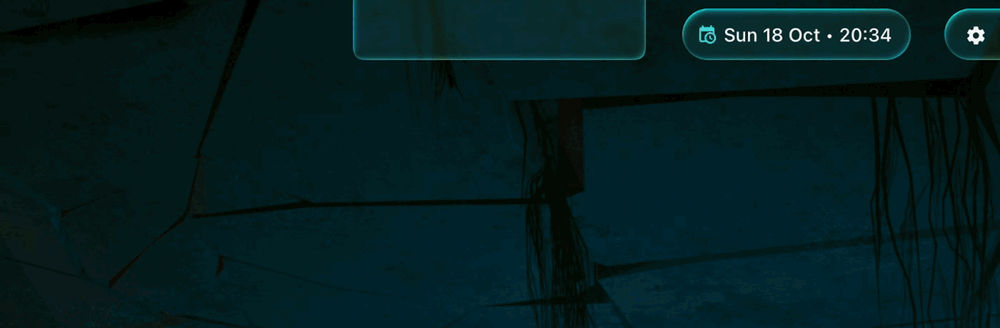

skylandbar
The bar of skyland, in Liquid Glass on macOS 14 to 26, and a drop-in for SketchyBar configs. Source: waxdred/skylandBar.

What it does
- Liquid Glass before macOS 26: a shader bends what is behind the bar at the edges like a lens, splits its colors a little, blurs and lights it. Apple's own glass on macOS 26; a Core Animation blur without Screen Recording.
- A selection lens on the focused workspace that flows to the next one like a drop of water, with colors along its edge; hover drops under the mouse.
- Follows the trackpad: with skyland's swipe, the lens moves with your fingers and springs back if you let go halfway.
- skyland built in: workspaces with their apps' icons, the focused window title, mode and focus events from skyland's socket, no script. It tells skyland its height, so windows stay below it.
- The notch: hover the camera notch and a glass panel grows out of it with your items (now playing, clock, volume).
- One TOML file, hot reloaded, with vars, includes and themes, or
skylandbar --add/--setcommands as SketchyBar does; a settings window that writes back to the file. - SketchyBar compatible: scripts reach it as
sketchybar, it holds SketchyBar's Mach names, and SbarLua configs run as they are.



Install
brew install waxdred/tap/skylandbar
mkdir -p ~/.config/skylandbar/themes
cp "$(brew --prefix)"/share/skylandbar/themes/liquid-glass.toml ~/.config/skylandbar/themes/
cp "$(brew --prefix)"/share/skylandbar/examples/liquid-glass.toml ~/.config/skylandbar/skylandbar.toml
skylandbar --check # "ok, N items"
skylandbar --service install # starts now and at every loginQuit SketchyBar first. Installed, skylandbar also starts with skyland when it is not running yet.
A workspaces item
[[item]]
type = "workspaces" # skyland's workspaces, built in
name = "workspace"
position = "left"
icon = { font = "Hack Nerd Font:Bold:15", padding_left = 10, padding_right = 10 }
background = { drawing = true, color = "0x00000000", height = 28, corner_radius = "concentric" }
focused = { background.glass = "lens", background.color = "0x40c6a0f6" }
hover = { background.glass = "hover" }
workspaces = { animation = "tanh", animation_frames = 20, max = 12 }The full reference (items, glass, notch, popups, events, settings window) is in the skylandBar README.